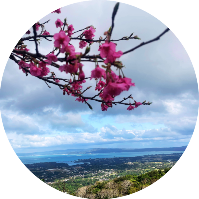
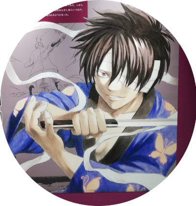
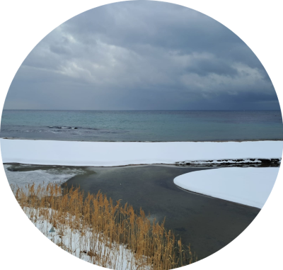
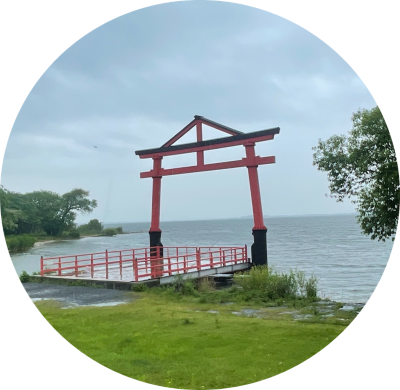

1. Gintama tour - a real crazy fan's adventure in Japan
Posted on 01.09.2025
I wanna read it!

Posted on 01.09.2025
I wanna read it!
Posted on [date]
I wanna read it!
Posted on [date]
I wanna read it!
 This year (2024-25) I got the chance to work in Japan, specifically in Okinawa as a divemaster. When I prepared my documents for my visa I had to fill out a tentative planning about what I want to visit in Japan. As I looked up what I possibly wanna see, I accidentally found out that the 20th Anniversary Gintama Exhibition is held this year. Just to give some context, I never follow even Gintama events or pages, nor do I collect anything despite being a fangirl. So, once I realized how lucky I was getting this possibility in Japan just in the right year, I was set to plan my trip around Gintama (not exclusively, of course). Upon closer inspection of the map, I found the city of Sakata (in Niigata) and Katsuura (in Chiba) and I became sure that I will do a name-hunting trip chasing the four most iconic names of Gintama for me: Gin, Takasugi, Zura and Sakamoto. Of course, any other Gintama related name, event, place was welcome too. Some finds were planned and even more just turned out to be on my way or in the cities which I visited, without me knowing ahead what I would stumble upon. I started my planning by typing in all the variations of their names in Google maps, and seeing what came up. That's how I ended up pinpointing the Sakamoto Castle Ruins, the Katsura river and Imperial Palace in Kyoto, the Takasugi district in Sanda and since I knew that Sorachi Hideaki was from Hokkaido I also planned 2 trips there (also because I love the snow). I made a promise to myself that even though, I do not read manga, nor do I collect merchandise, I'd buy a Gintama volume, and it had to be from Hokkaido. I handed in a very honest visa application stating that I'd do this trip for work and Gintama and it got accepted.
I reached Okinawa and started working there in May. On my 1st holiday I went to Fukuoka in November, then I went to Sapporo in December to be in the cold weather after the scorching heat in Okinawa. To be honest, Sapporo was a mistake for someone like me who is not a big city person, but the surroundings were amazing with the infinite little hidden gem onsens in the snowy mountains. I spent my nights in the city centre and as I walked through the central station I basically headbutted a draft beer station: the Sorachi beer's stand. I had no idea that Sorachi beer existed at all, let alone that it is a Hokkaido speciality beer so I got super excited...and I didn't order one. I told myself I would come back the next evening for it. I never ended up crossing the central station again, and because I didn't like Sapporo, on my 2nd trip to Hokkaido, I didn't go there either. I thought that when I would come back to Hokkaido, I could find another Sorachi beer stand somewhere else but how wrong I was… a missed accidental catch. However, I did go to a manga store on this trip and bought a volume of Gintama manga just as planned.
 My next holiday and the main event of my Japanese adventure was the GINTAMA EXHIBITION in January. IT WAS TOTALLY WORTH EVERY SINGLE MOMENT OF MY LIFE UP UNTIL THEN! I stayed in Chiba knowing that I cannot survive Tokyo, plus I had to go to Katsuura too on this trip. The exhibition was fantastic, simple but well-thought and -organized. I cried as I revived the scenes and saw Sorachi's handwriting imagining how much work he put into this, into the anime I watched 9 times from ep 1 to ep 367 and keep watching anytime I feel that I need it… and I thanked him silently inside while my tears were openly rolling down on my cheeks. I am somewhat proud that I didn't buy any merchandise. The next day, I visited Katsuura, the amazing little port town with breathtaking cliffs and a beautiful view. Zura is my favourite character in Gintama, not because of his personality (which is also awesome) but because what he is in the series for Gin and Takasugi: he is THE BEST FRIEND. Through it all, he never judged or left Gin, and even when he was treated coldly or offensively by Gin he stayed by and fought on his side. And did the same for Takasugi too. He stood by both of them. So, I cried in Katsuura too (even though the town's name has an extra "u").
The next find was in February when one day, my boss messaged me that we would have a dive in Cape Hedo early in the morning and that the meeting point was Ginama fish harbour (a place that I didn't even know of). I am not a morning person, but I woke up super easily on that day and was extremely happy just because of the name even though it misses a "t" :D. On top of it, once there, I realized that 2 months before I had climbed the surrounding mountains and taken a picture of Ginama fish harbour from above without knowing what its name was… 1st successful accidental catch.
February was my best month for Gintama treasures. After the abovementioned dive, I went for a 2-weeks break with my best friend who was visiting me. We went up north starting in Sakata. There, we spent the 1st day sick in the room so I had lots of time between two vomiting to look around what to visit aside from the can-be-found-anywhere shrine. That's when I saw that there was a park named Yoshida… in Sakata… A Yoshida park !! Our Airbnb host was an amazing old Japanese man, and he offered us that he would bring us anywhere by car if we needed it… well, after finding out the existence of THE Yoshida park , we needed a ride. We drove out of the city alongside some abandoned fields and arrived to the Yoshida park which was literally a cemetery and a 20 square metres empty park with one tree. Still, I was the happiest person on Earth and our host clearly decided that we were not normal when I started to take pictures. The fun didn't end here, after the small disappointment, I checked the map again and realized the miracle: there was another park called Shoyo . I cried a little out of happiness then we drew up the route and saw that said park is 10 minutes' walk from our house, so we walked there. It was a 15 square metre empty park with anything but a slide in it… Yet, I met Yoshida Shoyo in Sakata , and honestly both parks being abandoned, silently covered by snow and empty like Utsuro, the Void…what is it if not the greatest symbolism of Gintama? 2nd and 3rd successful accidental catches.
We continued our journey towards Hokkaido by train and plane. We stopped at Oga (because of Belzeebub, an anime ranked 2 on my list) and wandered around the cold sea and snowy paths. We enjoyed some days in Akita and travelled through a snowy mountain range and a huge snow tunnel by train and bus via Hirosaki to Aomori. There, we got on a plane and went to Kitami and Shiretoko. The drift ice and the winter landscape of Hokkaido were unforgettable, spiced up with the fox park and lots of onsens, but my search for a Sorachi beer (by now I 'd have been satisfied with a canned one too) was in vain. I even checked that there is a draft Sorachi bar in New Chitose airport from where I was supposed to fly back to Okinawa, so hoped I could get a draft one there, but by the time I reached, the bar was closed. As a revenge, at least, I took a picture of the draft beer tap. Nevertheless, I found some keychains featuring Gin, Toshi and Sogo in a Lawson. I didn't buy them, of course.
I returned to Okinawa to work and my best friend stayed in the mainland for a Kyoto – Osaka combo. One day, he messaged me with a picture showing some canned Sorachi beer . Although, they were not from Hokkaido, I told him to bring me one which he did on his way to me in Okinawa (his last stop before leaving Japan). In Okinawa Orion is THE beer, and I have never seen Sorachi, that is also why I hadn't known about it before. He brought a can of Sorachi for me and I opened it with great expectations… well, Okinawa is right to sell Orion instead… BUT IT WAS WORTH IT ANYHOW, IT IS CALLED SORACHI AFTERALL!! 5th finally successful accidental catch.
After this trip, the season started meaning busy days at work, so my last holiday was also the last name-hunting adventure too. I went to Izu and Kyushu. Izu , because of Grand Blue (that's where this diving anime ranking 3 on my list takes place) and I randomly picked a hostel (Hostel Knot) in Shuzenji because it is in the middle of the peninsula and I could go to the shore easily. Reaching the location was also relatively easy. I travelled from Shizuoka this time, by train and on the way, there was a stop Yoshiwara so I stepped out of the train and took a picture of the station name board. 4th accidental catch. In Shuzenji, which is a cute little old-style town, there is an admirable river flowing through along the main street. Unknown to me, this river was called Katsura. I only got to know it once the hostel staff gave me a map to show me what to see in town. I cried again and spent 3 wonderfully calm and beautiful days in Shuzenji. I travelled through one of the most amazing mountain ranges in my life to Heda and watched the Fuji for hours in peace with a cup of horrendous ice cream. Every night I'd spend hours by the Katsura river to take hot footbaths on its shores. 6th successful accidental catch.
The next step was Kyoto where I had plans for the Katsura Imperial Palace, the Sakamoto Castle Ruins Park and the Katsura river. I went there from Izu with the Shinkansen and then, from my hostel I took a local train to the Sakamoto Park. On the way, I had to change from train to bus in Otsu, another place I hadn't known of before. 7th successful accidental catch. Well, at least that because on the day of the Ruins the rain was pouring down and buses only came every 2 hrs. The Castle Ruins were literally 1 little rock, a sculpture of Sakamoto (the real one!) and some other stones here and there on the shore of a tiny bay of the otherwise huge Lake Biwa. I walked the park in 30 minutes then I waited for my bus in the rain for 1.5hours. The same night, I wandered around in the city close to my hostel, and I just noticed a little tiny bar called Sakamoto on the street. Of course, I had to go in to grab a cocktail. Then I licked the name tag on the bar to take the memory in with all my senses and went back home. The following day was supposed to be the height of my Kyoto stay: the Katsura Imperial Palace. I went to the bus station all excited, and rode the bus to the Imperial Palace's stop en route crossing the Katsura river. After getting off the bus, I confidently started to walk in the indicated (and wrong) direction to the entrance then I turned back and went down to the riverside. Admiring the river and crying out of happiness once again, I continued walking towards the entrance. I arrived and read a script saying that pre-booking is needed but you could also do that on spot. Obviously, I went for the on-site booking just to hear the answer: no more open slots for the day. The story of how I didn't get to go in to the Katsura Imperial Palace…but I WAS THERE! I left Kyoto the next morning to go to Sanda and close my Gintama trip with the Takasugi district.
Towards Sanda, I spotted a board saying that Takatsuki (I know, I know but almost, isn't it?) is to the right. I considered it the 7.5th successful accidental catch. As if Sanda was trying to make up to me for all the "let downs" (they weren't really let downs, of course), it was just the perfect closure and end of the trip. Sanda itself is amazing, Hotel Celecton, where I stayed is outstanding, cheap and the view and surroundings are indescribably beautiful. When I arrived there, I just simply enjoyed a light evening walk then the sunset and night view from my balcony. And finally, the next day, I went to the Takasugi district! On the way, I crossed the train station, where I again spotted a train destination being Takatsuki. I moved on and walked around in one of the loveliest, cutest, calmest and most traditional Japanese districts ever. I visited the Takasugi Hachiman shrine, the dam and flooded paddy fields just above it, then took a round among all the blue tiled houses and well-maintained gardens. It was just perfect. On the last day, I took the bus to Osaka airport and flew out of Japan with the sweetest taste in my mouth: Zura, Takasugi, Sakamoto and Gin were physically a part of me, they became an unerasable memory forever.